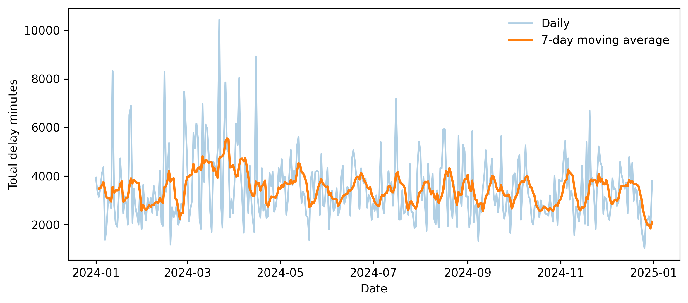
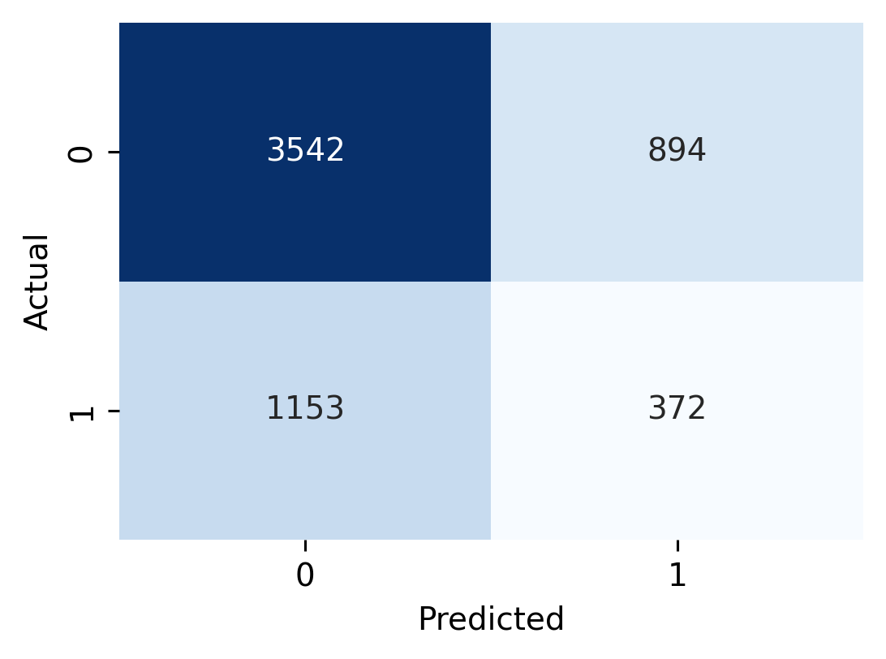
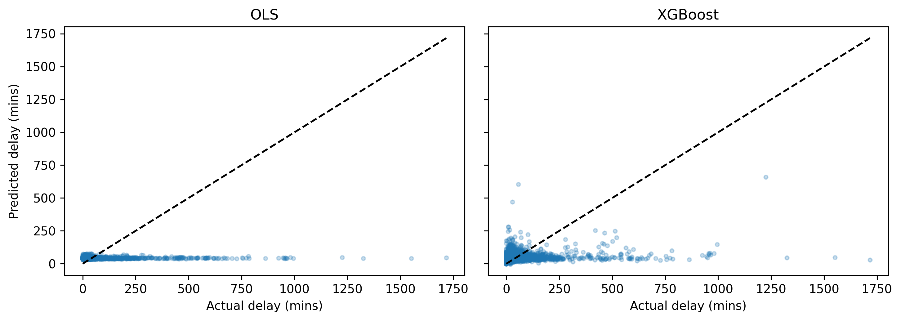
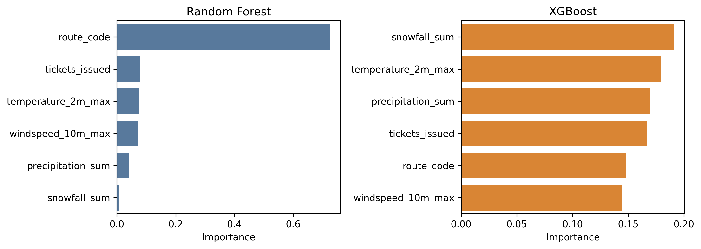

| Variable | count | mean | SD | min | median | max |
|---|---|---|---|---|---|---|
| bus_delay_events | 366 | 162.96 | 36.51 | 60.00 | 163.00 | 279.00 |
| total_min_delay | 366 | 3,457.73 | 1,336.20 | 1,018.00 | 3,183.50 | 10,435.00 |
| tickets_issued | 366 | 5,866.55 | 1,248.09 | 1,367.00 | 5,977.00 | 8,696.00 |
| driver_activity_proxy | 366 | -0.00 | 0.96 | -4.94 | 0.20 | 1.62 |
| precipitation_sum | 366 | 2.60 | 5.55 | 0.00 | 0.30 | 44.80 |
| snowfall_sum | 366 | 0.16 | 0.73 | 0.00 | 0.00 | 8.68 |
| windspeed_10m_max | 366 | 20.39 | 6.54 | 9.20 | 19.80 | 42.40 |
JSC370 Final Project - TTC Bus Delays
Repository: https://github.com/wchen27-jsc370/wchen27-jsc370.github.io
Interactive dashboard: interactive_visualizations
Final Report: final.pdf
Introduction
As a student who used to rely on the TTC daily for commuting, I was always frustrated by the unpredictability of service delays. If I had to be somewhere at a certain time, I would often find myself walking or biking there instead of relying on the TTC buses. This led me to wonder: why do TTC buses seem so unpredictably unreliable? Are there specific factors that contribute to bus delays, and can we predict when they are more likely to occur?
Research question. How well can weather and traffic conditions predict severe TTC bus delays in Toronto during 2024, and which predictors are most important?
Methods
The analysis uses three sources: TTC bus delay records, City of Toronto parking ticket records, and daily Toronto weather from the Open-Meteo Archive API. The raw inputs contain 59643 TTC delay records and 2147159 parking records drawn from 12 parking files. Parking tickets are used as a proxy for citywide street activity rather than a direct measure of congestion.
TTC incidents were cleaned by standardizing column names, parsing dates, coercing delay minutes to numeric, and restricting the data to 2024. Parking tickets were aggregated to daily ticket counts. I combined these daily ticket measures into a driver activity proxy using a weighted standardized average of log ticket volume and infraction diversity. Weather data were requested for Toronto coordinates and reduced to daily temperature, precipitation, snowfall, and windspeed measures.
These sources were first merged into a daily table with 366 days for descriptive analysis. For prediction, TTC incidents were then aggregated to a route-day panel with 29803 rows across 264 routes. A route-day was labeled high delay if total delay minutes were in the top quartile of the route-day distribution, giving a positive-class rate of 25.6%. Because the route-day panel is built from recorded delay incidents, it does not include zero-delay route-days.
I fit three baseline models using an 80/20 train-test split: a Random Forest classifier for the binary high-delay outcome, an OLS regression for continuous delay minutes, and an XGBoost regressor for nonlinear prediction. The classifier used n_estimators = 100; XGBoost used n_estimators = 100 and learning_rate = 0.1. Evaluation metrics were accuracy, weighted precision/recall/F1, positive-class precision/recall/F1, mean squared error, and mean absolute error. Interactive Plotly visualizations are provided on the website rather than in the PDF.
Table 1. Descriptive statistics for daily TTC, parking, and weather measures
Table 1 gives us direct insight into the statistical scale and variability of each daily measure modeled. In particular, it highlights the spread in delay burden (comparing median bus_delay_events and total_min_delay against outliers located at the max), while also showing the volatile daily variance of our weighted driver activity proxy.

The daily series shows substantial volatility throughout the year, with repeated short-lived spikes rather than a single isolated disruption period. This supports treating TTC delay burden as a highly variable outcome even before route-level modeling.
Results
Classification: Random Forest
Model Description: We deploy a Random Forest Classifier to identify high-delay route-days. A Random Forest is an ensemble learning method that constructs a multitude of decision trees and outputs the mode of the classes, effectively capturing complex, non-linear relationships between independent features (weather, traffic volume proxy, route) and the delay likelihood.
Data Split Strategy: The route-day dataset is partitioned into an 80% training set and a 20% test set (test_size=0.2). We utilize stratified sampling (stratify=y) based on the binary high_delay target to ensure proportional representation of severe delays across both sets, keeping a fixed random state for reproducibility. No separate validation set is used for this baseline implementation.
Hyperparameters: The model is initialized with n_estimators=100 (building 100 individual decision trees) while locking the random state. All other hyperparameters are left at scikit-learn defaults (e.g., Gini impurity criterion, unbounded max depth).
Test Statistics: The model is evaluated on the 20% holdout test set utilizing overall Accuracy, along with weighted Precision, Recall, and F1-Score metrics to account for class imbalances when evaluating the model’s exactness and completeness.
Regression: OLS Baseline and XGBoost
We pivot to regression approaches to directly forecast the exact continuous duration of daily delay minutes per route. Both algorithms employ an 80% training and 20% holdout test set split randomly (test_size=0.2, random_state=370). Stratification is not applied here since the target (total_delay_mins) is continuous.
1. Ordinary Least Squares (OLS) Baseline
- Model Description: A foundational multiple linear regression model that maps the direct linear combination of inputs to continuous route-day delays. It serves as a highly interpretable naive baseline providing analytical \(p\)-values and coefficient estimates.
- Hyperparameters: None. The model fits optimal coefficients to minimize the residual sum of squares. An intercept constant is added analytically before training via
sm.add_constant. - Test Statistics: Evaluated utilizing Mean Squared Error (MSE) and Mean Absolute Error (MAE) measured against the 20% holdout test set.
2. XGBoost Regressor
- Model Description: Extreme Gradient Boosting sequentially builds decision trees designed to correct the residual error margins of its preceding trees. It is robust to outliers and well-equipped for modeling the highly right-skewed tail distributions prevalent in our continuous delay targets without requiring normalization.
- Hyperparameters: Configured with
n_estimators=100(100 boosting rounds/trees) andlearning_rate=0.1(step size shrinkage) to prevent overfitting, anchored strictly to a fixed random state. - Test Statistics: Analyzed identically via test MSE and MAE to formally benchmark predictive performance uplift versus the linear parametric equation mapping context.
Classification: Random Forest
| Metric | Score |
|---|---|
| Accuracy | 0.657 |
| Weighted Precision | 0.637 |
| Weighted Recall | 0.657 |
| Weighted F1 | 0.646 |
| Positive-class Precision | 0.294 |
| Positive-class Recall | 0.244 |
| Positive-class F1 | 0.267 |
Regression
| Model | MSE | MAE |
|---|---|---|
| OLS baseline | 7612.05 | 37.64 |
| XGBoost regressor | 7313.84 | 36.58 |

The Random Forest achieved moderate overall performance but struggled on the class of greatest interest: only 24.4% of high-delay route-days were correctly identified. The confusion matrix shows 372 true positives against 1153 false negatives, so most severe route-day delays were still missed. For continuous prediction, XGBoost slightly outperformed OLS, but both models still had sizeable errors, with MAE around 36–37 minutes.

The regression scatterplots show that both models predict moderate delays more accurately than the largest outliers. XGBoost is somewhat better at following variation away from zero, but neither model comes close to capturing the most extreme delay days.
Selected OLS coefficients
| Variable | coef | std_err | p_value |
|---|---|---|---|
| temperature_2m_max | 0.036 | 0.062 | 0.5563 |
| precipitation_sum | -0.018 | 0.102 | 0.8604 |
| snowfall_sum | 3.423 | 0.762 | 0.0000 |
| windspeed_10m_max | 0.267 | 0.091 | 0.0033 |
| tickets_issued | 0.001 | 0.000 | 0.0027 |
The OLS model provides some inferential support for the project hypotheses. Snowfall, higher windspeed, and greater ticket volume all have positive coefficients with p-values below 0.01, while temperature and precipitation are not statistically significant in this linear specification.

Route identity dominated the Random Forest classifier, suggesting that persistent route-level differences explain much of the variation in severe delays. In the XGBoost regressor, snowfall was the most important single weather predictor, followed by temperature, precipitation, and ticket volume.
Conclusion
Big Picture Interpretations
The core motivation of this project was determining to what extent day to day weather conditions and varying driver activity explain the frequency and severity of TTC bus delays across Toronto. The preliminary data exploration effectively established a baseline: delay distributions are extremely skewed, and severe delays disproportionately pile up on days afflicted by adverse weather.
When translated into predictive models, our empirical results support these initial hypotheses, but also reveal the nuanced complexity of urban transit networks. The regression frameworks indicate that specific weather perturbations, most notably snowfall and wind speeds, alongside our proxy measure for street level driver activity carry statistically significant correlations that drive delay severity upward. Our tree based XGBoost model specifically isolates extreme weather events like snowfall as the most structurally important feature for forecasting the exact magnitude of continuous delays. Together, this supports our initial intuition: traffic pressure and adverse weather jointly disrupt regular bus operations.
Model Limitations
Despite validating these directional relationships, forecasting exact delay parameters proved difficult, as evidenced by large margin errors (MAE around 36 minutes) and a low positive-class Recall rate (~25%) in predicting extreme delays. This outcome highlights critical limitations within our current methodology:
- Resolution Mismatch: Our weather statistics operate on a broad, city-wide resolution (retrieved for central Toronto coordinates), yet bus delays and weather events (like localized squalls or icy hills) operate on highly localized spatial levels.
- Imperfect Proxies: While daily parking ticket volume provides a clever proxy for overall driver presence and law enforcement activity, it is not a one-to-one mapping for real-time vehicular traffic density or localized congestion along specific bus corridors. 3. Omitted Operational Variables: The models lack access to internal TTC operational data. Critical unobserved factors—such as localized road construction, sudden mechanical bus failures, operator absenteeism, and scheduled route frequencies—are likely generating the massive residual variance our models struggle to capture.
Ultimately, while macro variables like a snowstorm or general citywide traffic volume clearly shift the baseline probability of systemic delays, accurately predicting the exact minutes lost requires a more localized, granular operational dataset.